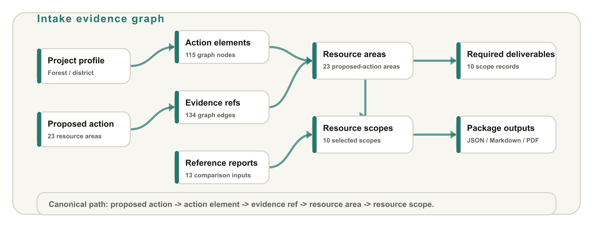
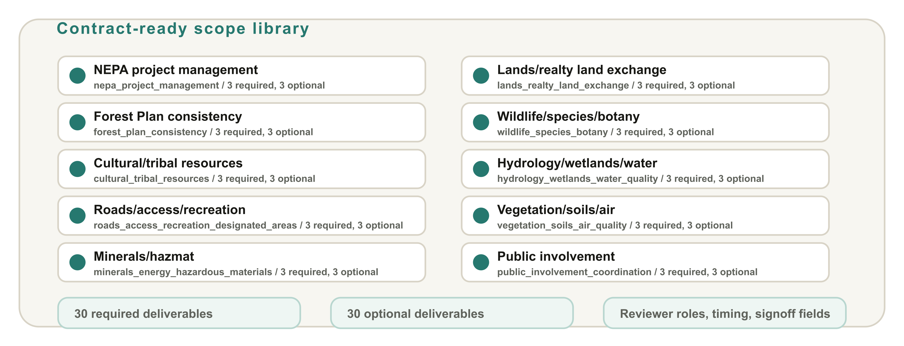
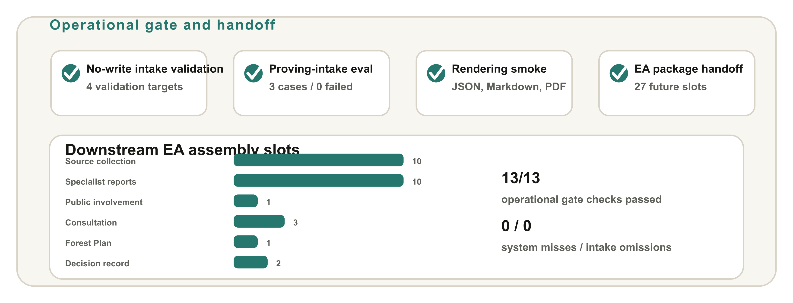

Standing Framework / Capabilities Brief
NEPA Scope of Work System
This system turns a proposed-action intake into a contract-ready scope of work requirements package before a complete EA review package exists. It selects resource workstreams, builds an intake evidence graph, renders required and optional deliverables, exposes reviewer adjudication, and hands accepted packages forward into EA assembly planning.
Operational proof is grounded in current gate evidence and tracked proving intakes.
10resource work templates
3tracked proving intakes
0system misses in gate
27EA handoff checklist slots

Planning model
The system reads structured proposed-action evidence and turns it into resource-specific work tasks, data needs, deliverables, assumptions, dependencies, acceptance criteria, reviewer roles, review timing, and signoff fields.
Review boundary
The package is upstream planning support: resource selection, evidence paths, and contract fields stay separate from compliance and legal conclusions.
Capability 1 / Intake Evidence Graph
From proposed action to resource scope
The package records how each proposed-action element and evidence reference triggers a resource area and how that resource area resolves to a resource scope. That keeps scope selection inspectable before specialist work is contracted.

Representative intake graph: 115 nodes and 134 edges connect project, proposed action, action elements, evidence refs, resource areas, selected resource scopes, required deliverables, and reference reports.
Defensibility shown
Every proposed-action-derived resource area is expected to keep the planning path: proposed action -> action element -> evidence ref -> resource area -> resource scope.
Review signal
Validation fails closed on unsupported resource areas, dangling graph edges, observed reports without proposed-action support, missing work content, and missing reviewer-facing package sections.
Capability 2 / Contract Ready Scopes
Turn resource screening into work statements
Resource scopes are not just labels. Each selected scope carries work tasks, data needs, required and optional deliverables, defensibility checks, assumptions, dependencies, acceptance criteria, reviewer role, review timing, and signoff fields.

Current scope library: 10 resource work templates. A representative package selects 10 scopes, all with contract fields, required deliverables, optional deliverables, and rendering checks passed.
What is inspectable
Scope records keep tasks separate from deliverables and keep assumptions, dependencies, acceptance criteria, reviewer role, timing, and signoff fields explicit for contracting review.
What this prevents
Optional deliverables cannot satisfy the required-deliverable gate, and selected scopes without contract fields fail validation before package use.
Capability 3 / Evaluation, Adjudication, And Handoff
Close the planning loop before EA assembly
The operational lane validates intakes without writing outputs, runs the proving-intake eval, checks generated package renderings, exposes reviewer adjudication for unresolved planning items, and converts an accepted package into a downstream EA assembly checklist.

Operational gate proof: 13/13 gate checks passed. The handoff pattern emits 27 future EA assembly slots across source collection, specialist reports, public involvement, consultation, Forest Plan consistency, and decision-record support.
Intake validateNo-write validation for templates and proving intakes.
Draft intakePlain-text proposed actions become unreviewed drafts for confirmation.
Package renderCanonical JSON plus Markdown/PDF scope-of-work package renderings.
AdjudicationReviewer worklist and replay path for planning decisions.
Operational gateEval, rendering smoke, docs/schema checks, and output hashes.
EA handoffFuture assembly slots without claiming artifacts exist now.
What this service delivers
- Structured proposed-action intake and validation before package generation.
- Resource scope-of-work requirements package with contract-ready scope records.
- Reviewer adjudication for unresolved planning choices and optional deliverable decisions.
- Downstream EA assembly checklist tied to the accepted package JSON.
Current boundary: this lane scopes work needed to prepare a defensible EA package. Handoff slots are future expectations, not evidence that future artifacts already exist.